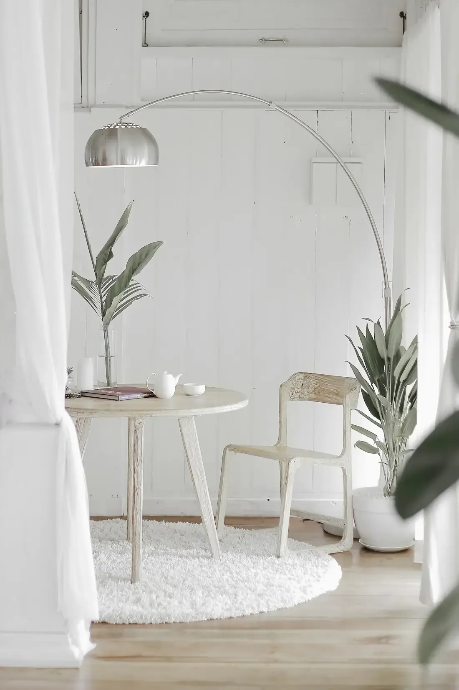

詠樂中醫診所位於台北市內湖區內湖路一段，提供一般中醫門診。若您有身體不適，或希望以中醫方式做日常調理，歡迎先以電話或官方 LINE 預約後再前來。
中醫看診通常會從生活作息、飲食、睡眠與過往就醫情形談起，再決定適合的處置方式。實際診療內容以當日醫師評估為準。
首次就診請攜帶健保卡與身分證件，並預留足夠時間說明身體狀況。若您同時在其他院所就醫或正在服用藥物，請於看診時一併告知。
以下為診所對外公開的服務方向。個別症狀是否適合就診、以及實際處置方式，都需由醫師當面評估。
一般中醫門診，由醫師了解身體狀況後說明調理方向。
若醫師評估適合，會進行針灸處置。細節與注意事項會在診間說明。
依個人狀況開立藥材或科學中藥。用藥方式請依醫師指示。
針對日常保健與體質調理提供建議，作為生活上的參考。
以下為一般中醫診所常見的就診步驟，方便您事先了解。實際流程請依現場說明為準。
請先以電話或官方 LINE 預約，並告知希望就診的時段。
請依約定時間到達，於櫃台報到。首次就診請攜帶健保卡與證件。
向醫師說明不適開始的時間、作息、飲食與正在使用的藥物。
依醫師指示用藥或回診。若症狀變化或有疑問，請再與診所聯絡。
以下整理自公開登記的營業時間，國定假日與臨時異動請以電話或 LINE 確認。
| 一 | 二 | 三 | 四 | 五 | 六 | 日 | |
|---|---|---|---|---|---|---|---|
| 上午 | 休診 | 休診 | 休診 | 休診 | 休診 | 09:00–12:00 | 休診 |
| 下午 | 14:00–17:00 | 14:00–17:00 | 14:00–17:00 | 14:00–17:00 | 14:00–17:00 | 休診 | 休診 |
| 晚上 | 18:00–21:00 | 18:00–21:00 | 18:00–21:00 | 18:00–21:00 | 18:00–21:00 | 休診 | 休診 |
以下為氣氛示意照片，不是診所實景。實際空間請以現場為準。

請撥打 02-2627-5580，或加入官方 LINE @351vhpcc 留言預約。建議先約好時段再前往。
請攜帶健保卡與身分證件。若有近期檢查報告，或正在服用其他藥物，也建議一併帶去或先列出，方便醫師評估。
建議先預約。若您希望現場掛號，請先打電話確認當日是否還有名額。
診所位於內湖路一段，鄰近街廓有路邊停車格與收費停車場。車位情況會隨時間變動，建議預留找車時間，或優先搭乘捷運。
掛號費、部分負擔與自費項目請以現場公告或向櫃台詢問為準，本頁不列出可能異動的金額。